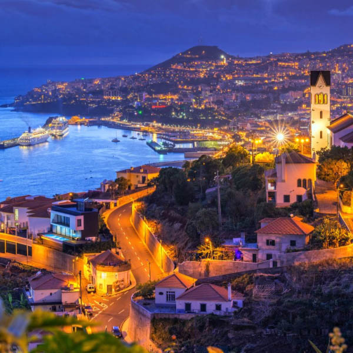

Planifica tu viaje a Madeira

Viajar Madeira es tan sencillo como seguir nuestras recomendaciones, organiza tu viaje con antelación y
tranquilidad para hacer de tus vacaciones el mejor recuerdo, la mejor aventura. Conoce cada punto de
interés turístico y no te pierdas ningún detalle, ningún olor, disfruta de los sabores gastronómicos de
Madeira en la Zona Velha y del colorido del mercado de Lavradores... viaja a Madeira con la seguridad de
saber siempre dónde alojarse y qué visitar. Nunca fue tan sencillo organizar tu viaje.
El turismo en Madeira es una invitación a los sentidos, un ensueño tejido de emociones en esta
"Perla del Atlántico" de la que nosotros te ofrecemos esta completa guía de turismo a Madeira.